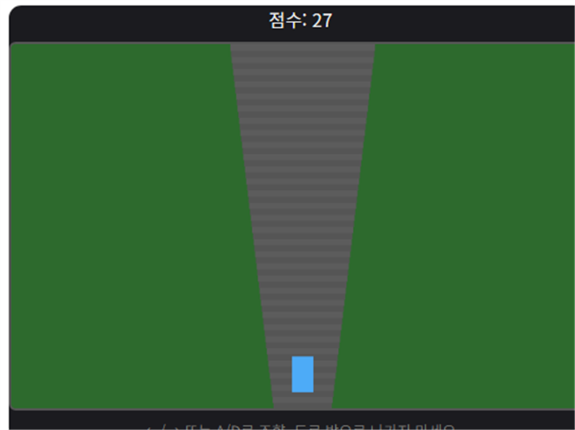

커브 도로 레이싱은 계속 구불구불하게 휘어지는 도로를 따라 좌우로 조작하며 달리는 레이싱 게임입니다. 도로 폭을 벗어나면 게임이 종료되므로 커브를 미리 예측하는 것이 핵심입니다.
기본 규칙
- ← / → 방향키(또는 A / D 키)로 좌우로 이동합니다.
- 도로 폭 밖으로 벗어나면 게임이 종료됩니다.
- 시간이 지날수록 속도가 빨라지고, 생존 시간에 비례해 점수가 오릅니다.
오래 살아남는 팁
1. 커브 진입 전에 미리 방향을 트세요
도로가 휘어지기 시작하는 지점에서 반응하면 이미 도로 폭에 가까워져 있는 경우가 많습니다. 화면 위쪽에서 도로가 휘는 방향을 먼저 확인하고 조금 일찍 방향을 트는 것이 안전합니다.
2. 도로 중앙보다 살짝 안쪽 라인을 유지하세요
커브가 연속될 때는 도로의 정중앙보다 다음 커브가 꺾이는 방향의 안쪽에 가깝게 붙어 달리면 다음 커브에 대응할 여유 공간이 더 넓게 확보됩니다.
직접 플레이해보고 싶다면 여기서 바로 시작할 수 있습니다.